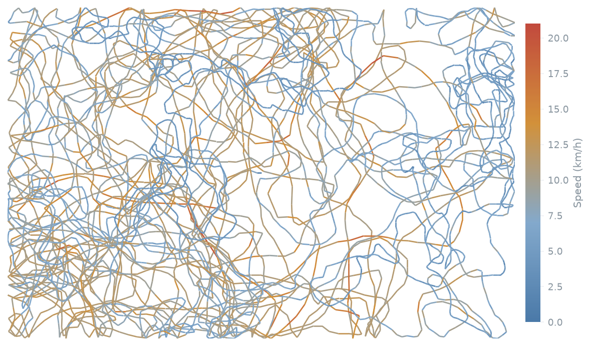

The analyst who reads the raw signal
Hi, I'm
Isabella Sale.
I take the messy stuff athletes throw off — GPS, force plates, wearables — and turn it into load monitoring, session reports and readiness a coach can genuinely act on. Raw signal in, decision out.
BSc (Hons) Sport & Exercise Science, University of Bath. Four projects on real athlete data, one force-plate dissertation, and a team app my whole squad opens every week.
Portfolio at a glance
1,173 m walk · 5,879 m jog · 1,134 m run · 196 m high-speed
GPS Session Physical Report
Thirty-six thousand rows of latitude and velocity, in — a clean one-page physical summary a coach can read in ten seconds, out. Run from a single command.

Selected projects
Six projects. Four on
real athlete data.
The method demos say so on the tin. Click any story to open the whole case study.
About
A sports scientist who codes.
I did my BSc in Sport & Exercise Science at Bath, and my dissertation is where it clicked — 2000 Hz force-plate traces and a pile of stats, all in service of one honest question about whether jump tests actually tell you what everyone assumes they do. That's where I learned to take a raw signal all the way to a decision I could defend.
Since then I've turned raw Catapult GPS into session reports, built an athlete-monitoring app my own lacrosse team now opens every week, and I basically live in Python, Power BI and Excel. I'm an athlete myself, so I care about the bit most dashboards skip: whether a coach or a player will actually use the thing.
"I want to know why some athletes stay healthy and others break down — and more of that answer is in the data than people think."
Right now I'm after a performance or sports-data analyst role where the sport-science and the coding both count.
Curriculum vitae
One page. No padding.
The short version — everything that matters, nothing that doesn't.
Sports scientist who codes. I turn athlete GPS, force-plate and wearable data into monitoring, reports and dashboards that staff actually use — and I've built the tools that collect the data as well as the analysis that reads it.
Force-plate dissertation (Qualisys + Visual3D) and an applied biomechanics lab report on 3D knee kinematics.
Lacrosse player, team analyst and the person who built the squad's app.
Performance and sports-data analyst roles, freelance or full-time.
What I love working on.
Performance analysis and athlete monitoring — and the tools that turn raw data into decisions.
Approach
A repeatable path from a messy export to a decision on the training ground.
Wrangle the feed
GPS, wearable and session logs — cleaned, joined and de-duplicated into one tidy dataset instead of ten exports.
Metrics that mean something
Distance, speed zones, Player Load, ACWR, readiness — benchmarked against each athlete, not a generic average.
Put it where it's used
A dashboard, a tracker or a report a coach reads in seconds — never the spreadsheet behind it.
Available for work
Have tracking data that isn't earning its keep?
I turn raw GPS, wearable and match data into monitoring, reports and dashboards your staff will actually use. Open to freelance projects and analyst roles — say hello.